Большой деревянный дом, земля, клубничные посадки, хозяйственная инфраструктура и природное окружение у леса — основа для частной усадьбы, агротуризма, камерных событий и фермерского бренда.
У объекта есть не только земля и дом. Здесь сформирована фермерская история, действующее ягодное направление, хозяйственные постройки, производственные сценарии и узнаваемость через «Клубничный хутор» и прошлый опыт брендов «Доброе поле» / «Фермерский сок».
Массив около 5 га у леса, тупиковая локация, ощущение уединения.
Большой сруб около 300 м² с высокой гостиной и террасой.
Около 2 га действующей плантации, понятная агротехнология.
Склад ~240 м², производственное здание ~384 м², хозпостройки.
Ягода продаётся без полноценного маркетинга — сарафан и постоянные клиенты.
Потенциал монетизации вне ягодного сезона — туризм, события, продукты.
Большой одноэтажный сруб с высокой гостиной, мощными деревянными балками, печью, террасой и видом на зелёную территорию.
Главный дом — не просто жилая функция. Это центр будущей усадьбы: место для закрытых ужинов, встреч инвесторов, семейных выходных, камерных мероприятий, ретритов и приёма гостей.
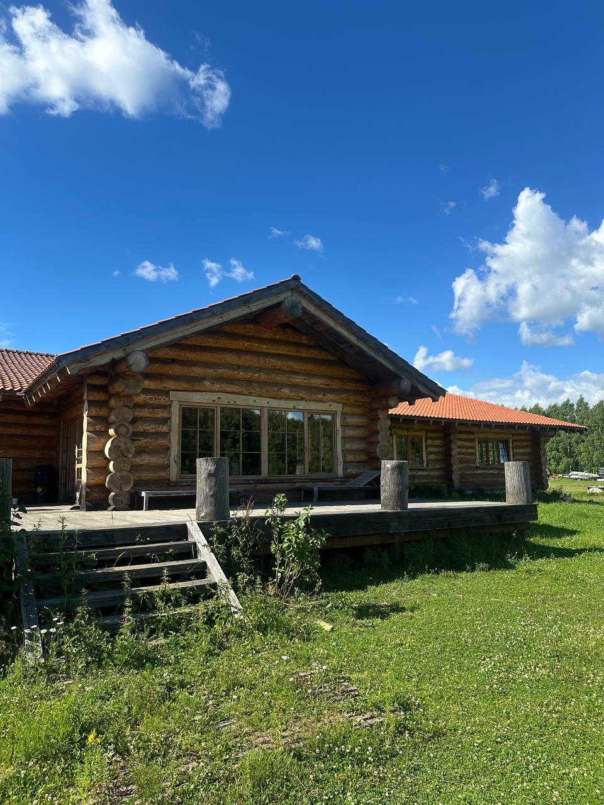
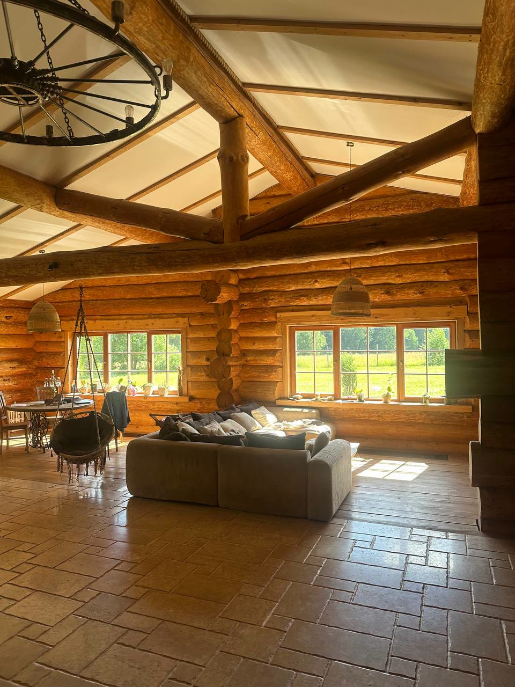
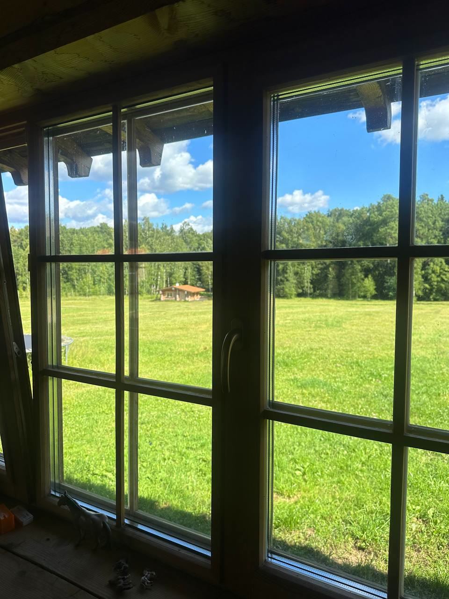
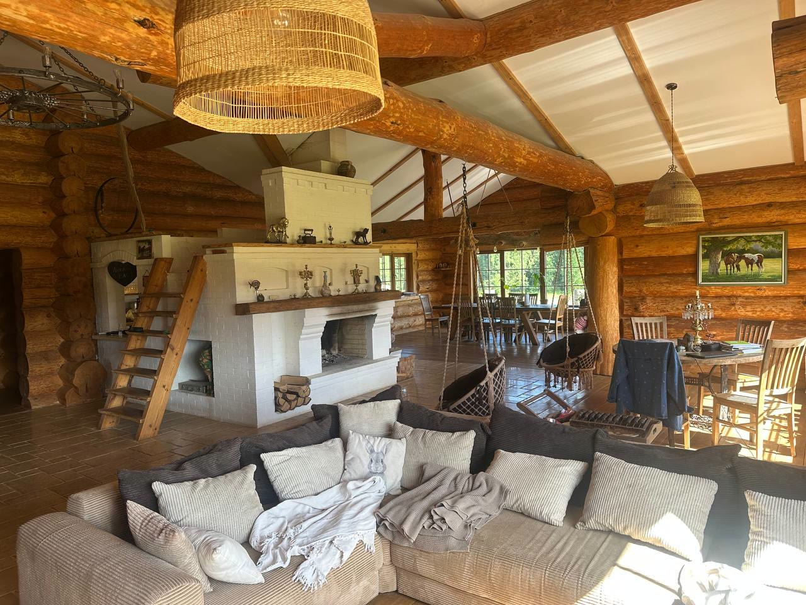
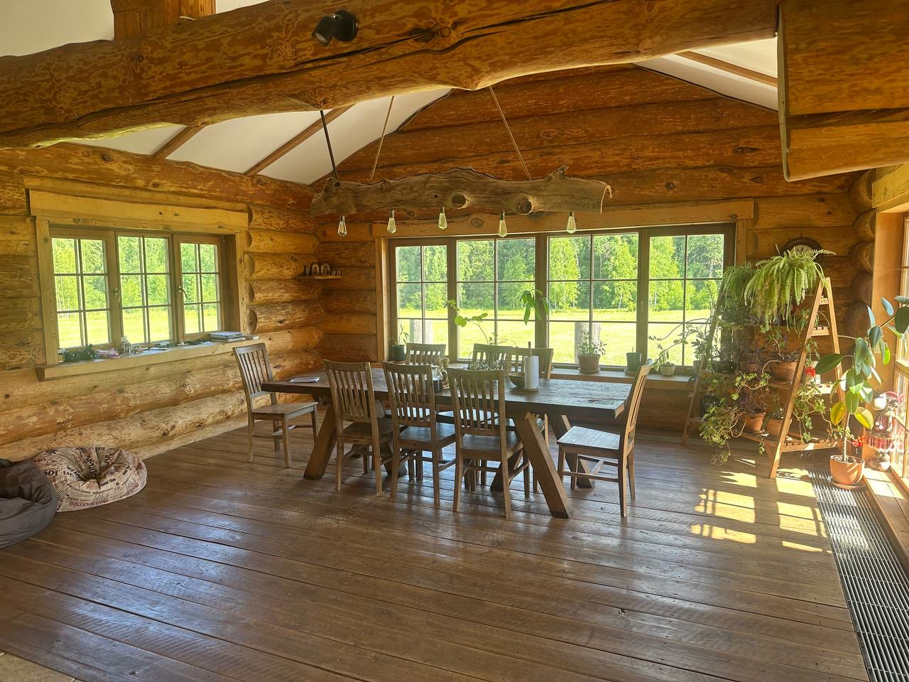
С объектом связаны фермерские бренды и публичные упоминания: КФХ «Доброе поле», «Фермерский сок», «Клубничный хутор». Ранее хозяйство фигурировало в медиа и поставочных историях, связанных с натуральной фермерской продукцией — в том числе с премиальным ритейлом.
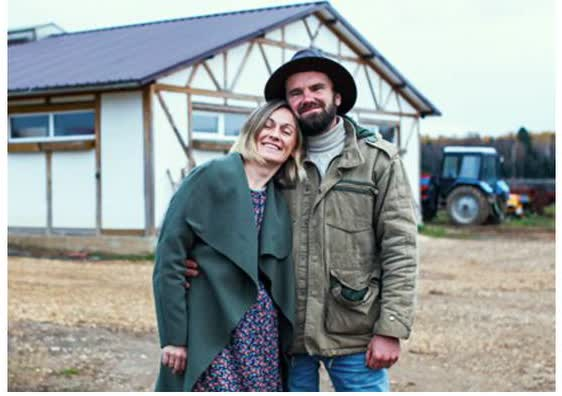
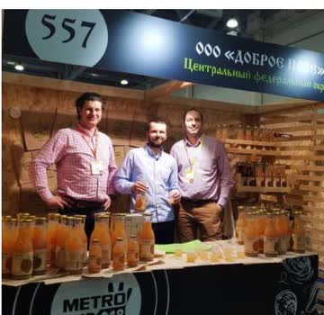
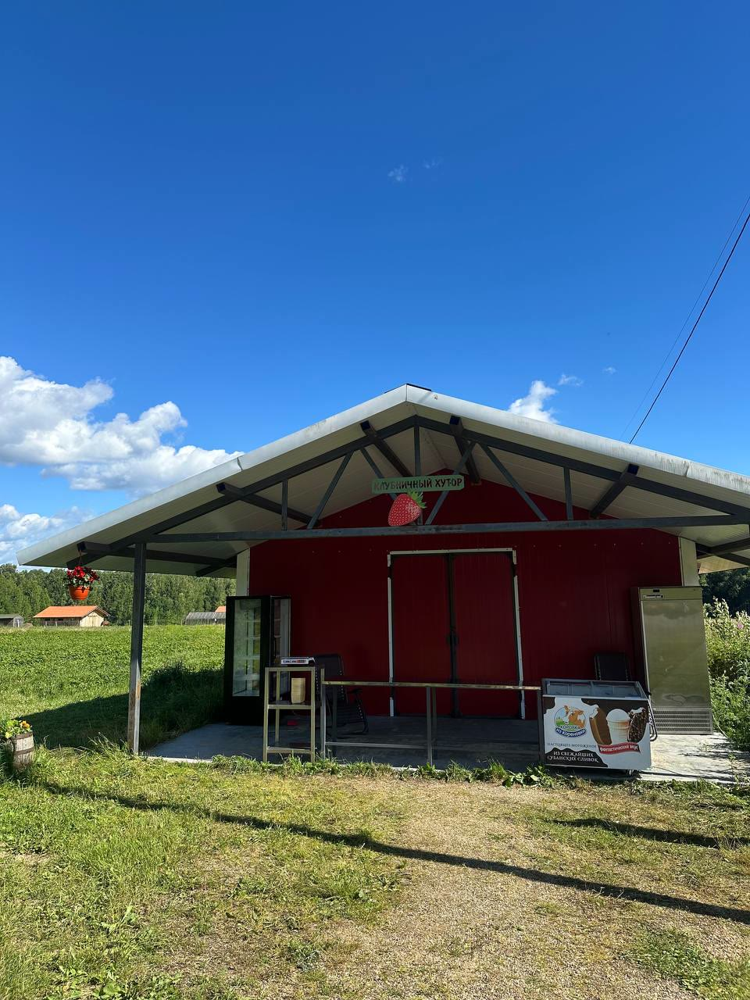
Медиа-история и первоисточники — доверительный актив объекта. Полный дайджест публикаций и материалов входит в закрытый инвест-пакет.
Ягодное направление уже привлекает людей на территорию и может стать входной точкой для агротуризма: самосбор, фестивали, фермерские наборы, семейные выходные и корпоративные программы.
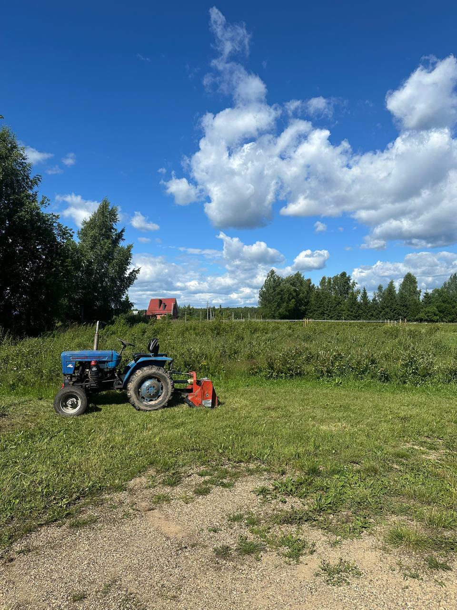
Клубника — это месяц активного cashflow. Сила объекта в том, что вокруг ягодного якоря можно выстроить круглогодичную модель с высокой добавленной стоимостью.
Развитие клубничного направления, расширение сортов, самосбор, семейные выходные, фермерская лавка, ягодные фестивали.
Гостевые домики и барнхаусы, баня, фермерские завтраки, лесные прогулки, зимняя лыжня, заимка, сезонные маршруты, фермерский магазин.
Закрытые ужины, корпоративы до 100 гостей, семейные праздники, бренд-ивенты, гастро-вечера, ретриты и бизнес-клубы. Не массовая площадка — усадьба «с историей».
Ягодные заготовки, соки, морсы, варенье, сушёные ягоды, подарочные наборы, фермерская переработка и гастрономический бренд.
Объект включает жилую, фермерскую и хозяйственную части: дом, поля, хозпостройки, склад и производственное здание, а также зоны для будущего гостевого сценария и камерных событий.
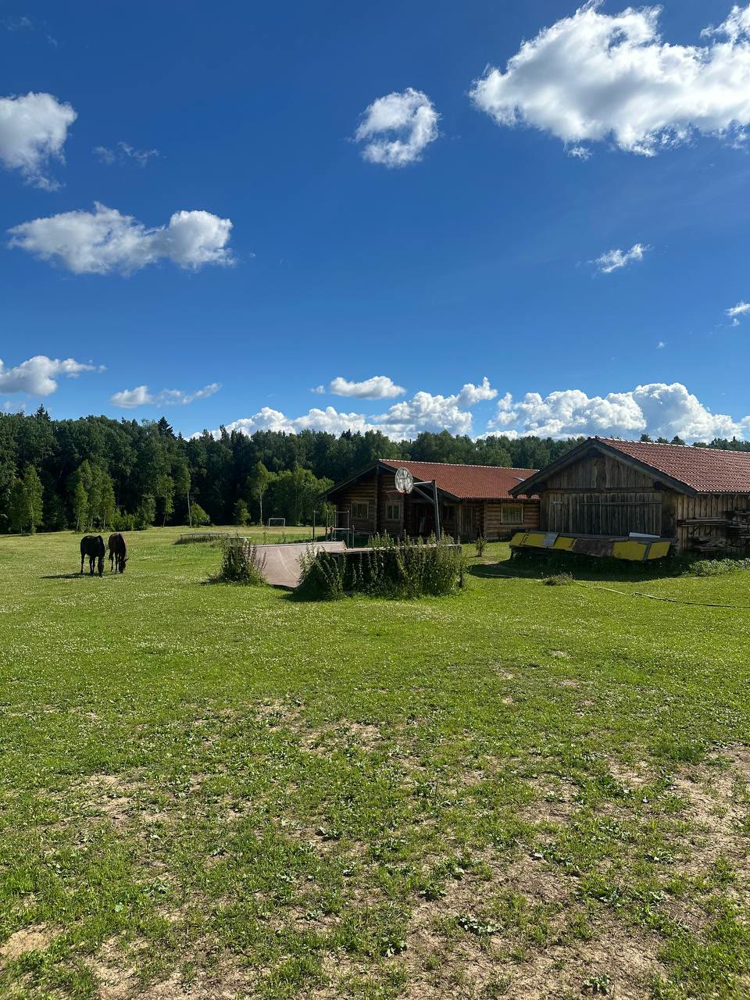
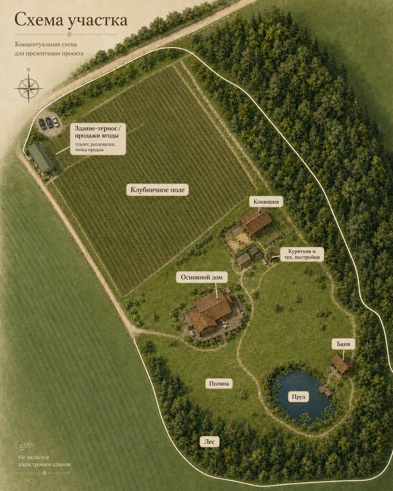
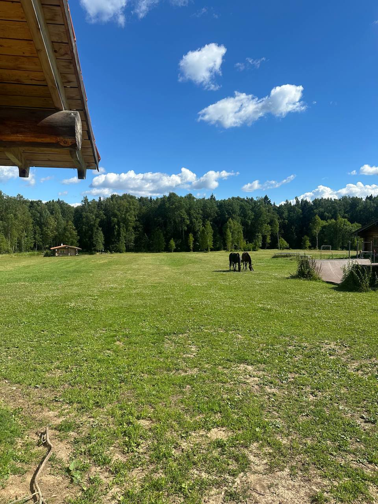
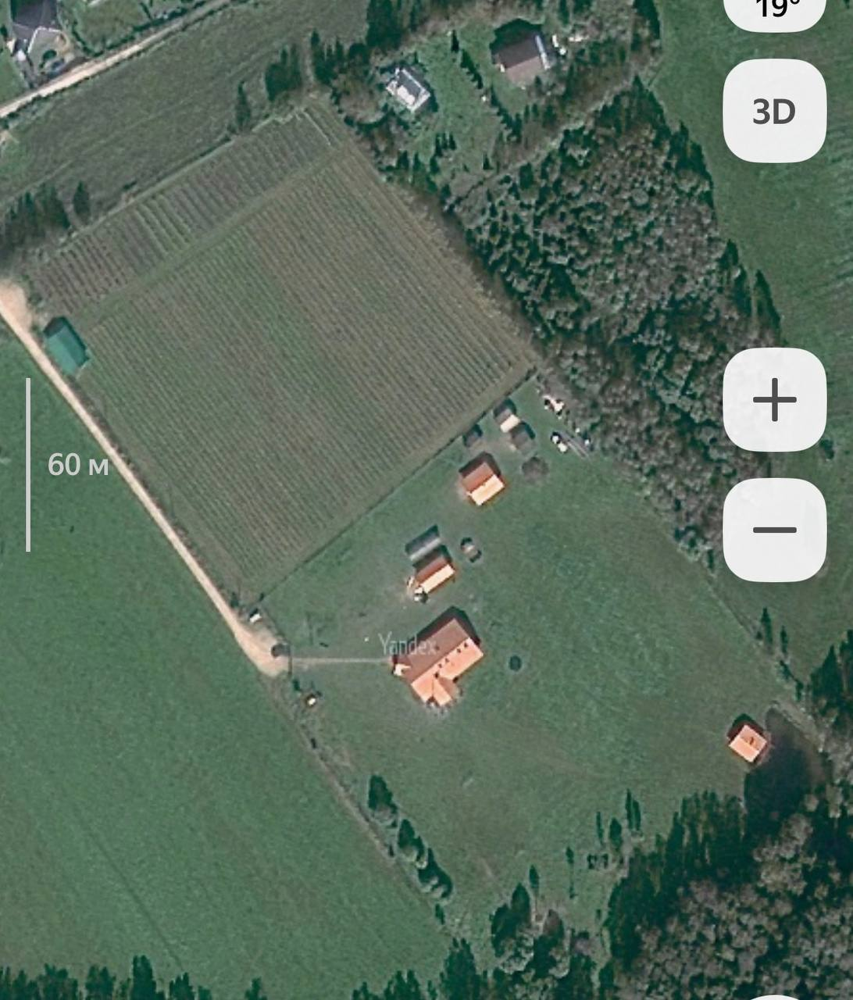
Поседкино, Мытищинский округ. Локация сочетает уединение, природное окружение и близость к платёжеспособной аудитории Москвы и Подмосковья — важная основа для самосбора, камерного отдыха, частных событий и фермерского продукта.
Природное и аграрное окружение формирует сильную основу для загородного проекта. Финальные градостроительные и правовые параметры предоставляются в закрытом пакете.
Клубничное направление уже генерирует поток покупателей.
Объект можно развивать в нескольких направлениях сразу.
Дом и территория уже имеют визуальную и эмоциональную ценность.
Прошлый бренд, медиа-след и публичные упоминания.
Отсутствие системного маркетинга — зона быстрого усиления.
При грамотной упаковке — редкий загородный продукт, а не просто земля.
По запросу предоставляется инвестиционный пакет: текущая сезонная экономика клубники, расходы на сборщиков, оценка потерь и погодных рисков, сценарии расширения, самосбора, бани и беседок, барнхаусов, камерных мероприятий, фермерской переработки — и перечень документов к проверке.
Цифры на лендинге указаны как ориентиры и сценарии. Подробная модель предоставляется после первичного контакта.
Запросить закрытый пакет →Базовые сведения для проверки. Выписки ЕГРН, ВРИ, ПЗЗ, градостроительные ограничения и сценарии допустимого использования — по запросу заинтересованным сторонам.
Отсутствие обременений, точный ВРИ, площади и объём допустимого строительства подтверждаются актуальной выпиской ЕГРН и градостроительной проверкой.
Потенциал объекта раскрывается не пассивным владением, а через грамотного оператора. Мы показываем риски открыто — это часть честной инвестиционной логики.
Сезонность клубники — активный денежный поток около месяца.
Погодные и аграрные риски: заморозки, град, вредители.
Нужно агрономическое сопровождение направления.
Обязательна проверка ВРИ, границ и градостроительных ограничений.
Доходность зависит от оператора, а не от пассивной модели.
Для туризма и событий потребуется маркетинг и сервис.
Проект подходит не пассивному покупателю, а владельцу или инвестору, который понимает ценность операционного развития.
В ответ вы получаете инвест-мемо, фото- и видеоматериалы, кадастровые данные, базовую финансовую модель и договорённость о просмотре.